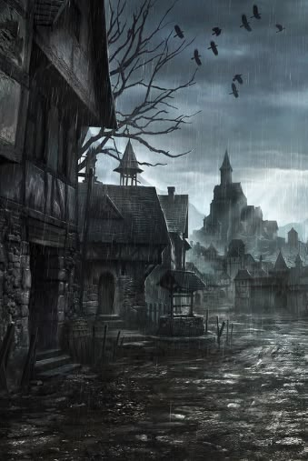

You finally find the mayors building, searching and looting the place you find what looks to be the office room. Looking around you find a bloody scroll in a drawer. Theres a depiction of a grand and holy tree that bares apples of youth. Under the depiction it says; "Man's worst fear is not knowing one's own lifespan. But children shouldn't fight against their mother's first plan." You found what seems to be a clue to some sort of mythical tree. Could this be what your looking for? Perhaps there is more to find in the nearby forestry.